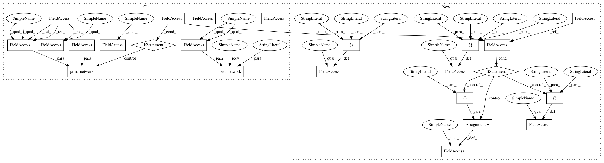

843d68642bd15d5737e3eb39abd76c748d6b52e8,models/pix2pix_model.py,Pix2PixModel,initialize,#Pix2PixModel#Any#,13
Before Change
if self.isTrain:
use_sigmoid = opt.no_lsgan
self.netD = networks.define_D(opt.input_nc + opt.output_nc, opt.ndf,
opt.which_model_netD,
opt.n_layers_D, opt.norm, use_sigmoid, opt.init_type, self.gpu_ids)
if not self.isTrain or opt.continue_train:
self.load_network(self.netG, "G", opt.which_epoch)
if self.isTrain:
self.load_network(self.netD, "D", opt.which_epoch)
if self.isTrain:
self.fake_AB_pool = ImagePool(opt.pool_size)
// define loss functions
self.criterionGAN = networks.GANLoss(use_lsgan=not opt.no_lsgan, tensor=self.Tensor)
self.criterionL1 = torch.nn.L1Loss()
// initialize optimizers
self.schedulers = []
self.optimizers = []
self.optimizer_G = torch.optim.Adam(self.netG.parameters(),
lr=opt.lr, betas=(opt.beta1, 0.999))
self.optimizer_D = torch.optim.Adam(self.netD.parameters(),
lr=opt.lr, betas=(opt.beta1, 0.999))
self.optimizers.append(self.optimizer_G)
self.optimizers.append(self.optimizer_D)
for optimizer in self.optimizers:
self.schedulers.append(networks.get_scheduler(optimizer, opt))
print("---------- Networks initialized -------------")
networks.print_network(self.netG, opt.verbose)
if self.isTrain:
networks.print_network(self.netD, opt.verbose)
print("-----------------------------------------------")
def set_input(self, input):
AtoB = self.opt.which_direction == "AtoB"
After Change
def initialize(self, opt):
BaseModel.initialize(self, opt)
self.isTrain = opt.isTrain
// specify the training losses you want to print out. The program will call base_model.get_current_errors
self.loss_names = ["G_GAN", "G_L1", "D_real", "D_fake"]
// specify the images you want to save/display. The program will call base_model.get_current_visuals
self.visual_names = ["real_A", "fake_B", "real_B"]
// specify the models you want to save to the disk. The program will call base_model.save
if self.isTrain:
self.model_names = ["G", "D"]
else: // during test time, only load Gs
self.model_names = ["G"]
// load/define networks
self.netG = networks.define_G(opt.input_nc, opt.output_nc, opt.ngf,
opt.which_model_netG, opt.norm, not opt.no_dropout, opt.init_type, self.gpu_ids)
if self.isTrain:
In pattern: SUPERPATTERN
Frequency: 3
Non-data size: 24
Instances
Project Name: richzhang/colorization-pytorch
Commit Name: 843d68642bd15d5737e3eb39abd76c748d6b52e8
Time: 2018-04-19
Author: junyanzhu89@gmail.com
File Name: models/pix2pix_model.py
Class Name: Pix2PixModel
Method Name: initialize
Project Name: junyanz/pytorch-CycleGAN-and-pix2pix
Commit Name: 843d68642bd15d5737e3eb39abd76c748d6b52e8
Time: 2018-04-19
Author: junyanzhu89@gmail.com
File Name: models/cycle_gan_model.py
Class Name: CycleGANModel
Method Name: initialize
Project Name: junyanz/pytorch-CycleGAN-and-pix2pix
Commit Name: 843d68642bd15d5737e3eb39abd76c748d6b52e8
Time: 2018-04-19
Author: junyanzhu89@gmail.com
File Name: models/pix2pix_model.py
Class Name: Pix2PixModel
Method Name: initialize